People
| Figure | Creature | Race | Size | Cahulaks can tangle it |
|---|---|---|---|---|
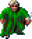 | Announcer | human | M (man-sized) | yes |
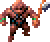 | Arant | human | M (man-sized) | yes |
 | Arant's Guard | human | M (man-sized) | yes |
 | Arena Guard | human | M (man-sized) | yes |
 | Armor Merchant | human | M (man-sized) | yes |
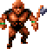 | Army Commander | mul | M (man-sized) | yes |
 | Balkazar | human | M (man-sized) | yes |
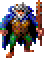 | Balkazar's Image | human | M (man-sized) | yes |
 | Bowyer | human | M (man-sized) | yes |
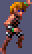 | Caravan Guard | elf | M (man-sized) | yes |
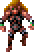 | Caravan Master | elf | M (man-sized) | yes |
 | Castle Guard | human | M (man-sized) | yes |
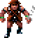 | Chaero | human | M (man-sized) | yes |
 | Chahl | mul | M (man-sized) | yes |
 | Chaya | human | M (man-sized) | yes |
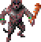 | Chief Daughter | human | M (man-sized) | yes |
 | Churrr | human | M (man-sized) | yes |
 | Council Member | human | M (man-sized) | yes |
 | Dag Prisoner | human | M (man-sized) | yes |
 | Dagger | human | M (man-sized) | yes |
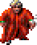 | Dagolar | human | M (man-sized) | yes |
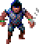 | Dagolar Guard | human | M (man-sized) | yes |
 | Dakaren | human | M (man-sized) | yes |
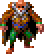 | Defiler | human | M (man-sized) | yes |
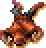 | Delirious Man | human | M (man-sized) | yes |
 | Demothi | human | M (man-sized) | yes |
 | Dinos | human | M (man-sized) | yes |
 | Drajian Guard | human | M (man-sized) | yes |
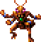 | Druid | human | M (man-sized) | yes |
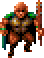 | Druid of Waters | mul | M (man-sized) | yes |
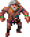 | Egrus | human | M (man-sized) | yes |
 | Elite Guard | human | M (man-sized) | yes |
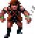 | Elven Leader | elf | M (man-sized) | yes |
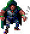 | Father Garyn | human | M (man-sized) | yes |
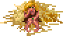 | Gilal | human | M (man-sized) | yes |
 | Gladiator | human | M (man-sized) | yes |
 | Guard | human | M (man-sized) | yes |
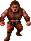 | Guard | half-giant | L (large) | no: too big (a half-giant) |
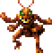 | Guardian | thri-kreen | M (man-sized) ? | yes |
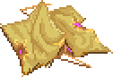 | Hermit | human | M (man-sized) | yes |
 | Hototo | human | M (man-sized) | yes |
 | Jake | human | M (man-sized) | yes |
 | Jark | elf | M (man-sized) | yes |
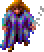 | Jasmine | human | M (man-sized) | yes |
 | Kalinin | human | M (man-sized) | yes |
 | Karas | human | M (man-sized) | yes |
 | Kasha | human | M (man-sized) | yes |
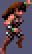 | Katura | human | M (man-sized) | yes |
 | Kel | elf | M (man-sized) | yes |
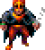 | Keldar | human | M (man-sized) | yes |
 | Krikor | dwarf | M (man-sized) | yes |
 | Kurzak | human | M (man-sized) | yes |
 | Larissa | elf | M (man-sized) | yes |
 | Lazy guard | human | M (man-sized) | yes |
 | Legcrusher | half-giant | L (large) | no: too big (a half-giant) |
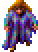 | Linara | human | M (man-sized) | yes |
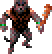 | Low Warren Thug | human | M (man-sized) | yes |
 | Loweman | human | M (man-sized) | yes |
 | Lt. Kwerin | human | M (man-sized) | yes |
 | Maris | human | M (man-sized) | yes |
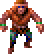 | Mayor of Gedron | human | M (man-sized) | yes |
 | Mehtar | thri-kreen | M (man-sized) ? | yes |
 | Melkor | human | M (man-sized) | yes |
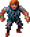 | Merzol | human | M (man-sized) | yes |
 | Messenger | human | M (man-sized) | yes |
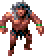 | Mikquetzl | human | M (man-sized) | yes |
 | Mirlon | human | M (man-sized) | yes |
 | Mow | human | M (man-sized) | yes |
 | Nnamdi | human | M (man-sized) | yes |
 | Notaku | human | M (man-sized) | yes |
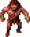 | Old One Eye | human | M (man-sized) | yes |
 | Prisoner | human | M (man-sized) | yes |
 | Psionicist | human | M (man-sized) | yes |
 | Ranger | human | M (man-sized) | yes |
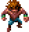 | Renegade | halfling | S (small) | yes |
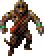 | Rogue Shaman | human | M (man-sized) | yes |
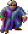 | Sage | human | M (man-sized) | yes |
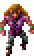 | Saria | elf | M (man-sized) | yes |
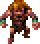 | Saria | halfling | S (small) | yes |
 | Scar | human | M (man-sized) | yes |
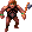 | Scar's henchman | human | M (man-sized) | yes |
 | Semyon | human | M (man-sized) | yes |
 | Seref | elf | M (man-sized) | yes |
 | Serf | human | M (man-sized) | yes |
 | Skull Guardian | human | M (man-sized) | yes |
 | Slave | human | M (man-sized) | yes |
 | Slave Hunter | human | M (man-sized) | yes |
 | Slaver Guard | human | M (man-sized) | yes |
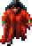 | Tara | human | M (man-sized) | yes |
 | Tari | human | M (man-sized) | yes |
 | Templar | human | M (man-sized) | yes |
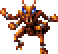 | Thrikreen | thri-kreen | M (man-sized) ? | yes |
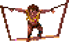 | Tied-up Prisoner | human | M (man-sized) | yes |
 | Tobrian | elf | M (man-sized) | yes |
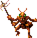 | Tohr-kreen | thri-kreen | M (man-sized) ? | yes |
 | Toonuu | human | M (man-sized) | yes |
 | Troop Leader | human | M (man-sized) | yes |
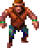 | Trustee | human | M (man-sized) | yes |
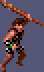 | Uskuye | human | M (man-sized) | yes |
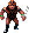 | Uzoma | human | M (man-sized) | yes |
 | Village Hero | human | M (man-sized) | yes |
 | Villager | human | M (man-sized) | yes |
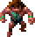 | Visionary | halfling | S (small) | yes |
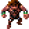 | Visitor | human | M (man-sized) | yes |
 | Visitor | dwarf | M (man-sized) | yes |
 | Warren Chief | human | M (man-sized) | yes |
 | Warrior | human | M (man-sized) | yes |
 | Weapon Merchant | human | M (man-sized) | yes |
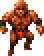 | Wild Mul | mul | M (man-sized) | yes |
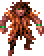 | Wind Druid | human | M (man-sized) | yes |
 | Worshipper | human | M (man-sized) | yes |
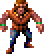 | Wyrmias | human | M (man-sized) | yes |
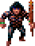 | Wyvern Master | human | M (man-sized) | yes |
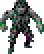 | Zeefram | human | M (man-sized) | yes |
Monsters
| Figure | Creature | Race | Size | Cahulaks can tangle it |
|---|---|---|---|---|
 | Air Elemental | elemental | L (large) | no: nothing to tangle |
| Alita | monster | L (large) ? | no: too big | |
| Animated Statue | monster | L (large) ? | no: too big | |
 | Aposs | undead | M (man-sized) | yes |
| Babau | monster | M (man-sized) | yes | |
| Black Mastyrial | monster | L (large) | no: too big | |
 | Blind One | monster | L (large) | no: too big |
| Blue Slaad | monster | L (large) | no: too big | |
| Bulette | monster | L (large) | no: too big | |
 | Cheee-smak-tunk! | monster | L (large) ? | no: too big |
 | Churr-te-tunk! | monster | L (large) ? | no: too big |
 | Click-tunk! | monster | L (large) ? | no: too big |
 | Convert | undead | M (man-sized) | yes |
 | Cragg | undead | M (man-sized) | no: nothing to tangle |
| Daggoran | monster | L (large) ? | no: too big | |
| Dagolar Slime | monster | M (man-sized) | no: nothing to tangle | |
 | Dark Spider | monster | L (large) | no: too big |
| Djinn | monster | L (large) | no: too big | |
| Drummer | monster | L (large) | no: too big | |
| Dune Reaper | monster | H (huge) | no: too big | |
| Dust Devil | monster | M (man-sized) ? | no: nothing to tangle | |
| Earth Elemental | monster | L (large) | no: nothing to tangle | |
| Evard's Tentacle | monster | L (large) ? | no: nothing to tangle | |
| Fire Eel | monster | L (large) ? | no: too big | |
 | Fire Elemental | monster | L (large) | no: nothing to tangle |
 | First Folk | monster | S (small) ? | yes |
| Guard | monster | L (large) | no: too big | |
| Insect Swarm | monster | L (large) ? | no: nothing to tangle | |
 | Laussa | monster | M (man-sized) ? | yes |
| Lesser Air Eleme | monster | M (man-sized) ? | no: nothing to tangle | |
| Lesser Water Ele | monster | M (man-sized) ? | no: nothing to tangle | |
 | Lsr Earth Elem | monster | M (man-sized) ? | no: nothing to tangle |
| Lsr Fire Elem | monster | M (man-sized) ? | no: nothing to tangle | |
 | Magera | monster | L (large) | no: too big |
 | Mastyrial | monster | L (large) | no: too big |
| Mountain Stalker | monster | L (large) ? | no: too big | |
| Otyugh | monster | L (large) | no: too big | |
 | Outcast | monster | M (man-sized) | yes |
| Psurlon | monster | L (large) | no: too big | |
 | Psurlon Adept | monster | L (large) | no: too big |
| Rampager | monster | L (large) ? | no: too big | |
| Red Slaad | monster | L (large) | no: too big | |
| Sand Howler | monster | M (man-sized) ? | no: can't be tangled | |
| Screamer Beetle | monster | L (large) ? | no: too big | |
 | Shadow | undead | M (man-sized) | no: nothing to tangle |
 | Shadow Guard | undead | M (man-sized) | no: nothing to tangle |
 | Shadow King | undead | M (man-sized) | no: nothing to tangle |
 | Shadow Prince | undead | M (man-sized) | no: nothing to tangle |
| Shadow Worker | undead | M (man-sized) | no: nothing to tangle | |
 | Shaman Follower | monster | M (man-sized) | yes |
| Silt Horror | monster | G (gargantuan) | no: too big | |
| Silt Runner | monster | S (small) | yes | |
| Skull Elder | undead | M (man-sized) | yes | |
| Slave | monster | L (large) | no: too big | |
 | Slave Leaders | monster | L (large) | no: too big |
| Slig | monster | M (man-sized) | yes | |
| Spider Mage | monster | L (large) ? | no: too big | |
 | Ssovan | monster | M (man-sized) | yes |
 | Ssurran | monster | M (man-sized) | yes |
| Strine | monster | M (man-sized) ? | no: can't be tangled | |
| Styr | monster | L (large) ? | no: too big | |
 | Tanelyv | undead | M (man-sized) | no: nothing to tangle |
 | Tara's Follower | undead | M (man-sized) | yes |
 | Tribesman | monster | M (man-sized) | yes |
 | Tristram | undead | M (man-sized) | no: nothing to tangle |
 | Tynan | undead | M (man-sized) | no: nothing to tangle |
| Tyrian Slime | monster | M (man-sized) | no: nothing to tangle | |
| Undermt Folk | monster | S (small) ? | yes | |
| Vrock | monster | L (large) | no: too big | |
 | Wagon Guard | monster | L (large) | no: too big |
 | Water Elemental | monster | L (large) | no: nothing to tangle |
 | Worker | monster | L (large) | no: too big |
| Wyvern | monster | L (large) ? | no: too big | |
| Xorn | monster | L (large) | no: too big | |
 | Zombie | undead | M (man-sized) | yes |